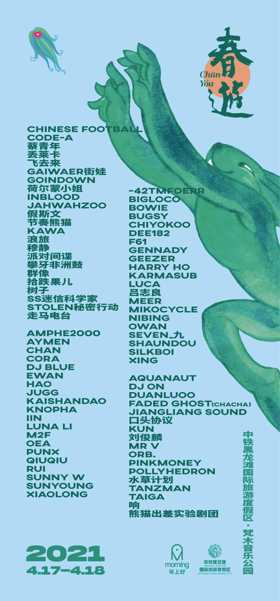

2021
经过因为新冠疫情而停下的一年，
2021年，
我们重新回到了黑龙滩。
2019年那个曾经让我们感到绝望的地方，
这一次，好像终于变成了我们想象中的春游。
人们在草地上听音乐、喝酒、吃火锅、打麻将，
带着宠物和帐篷来到这里，
从白天一直待到第二天。
音乐依然重要，
但春游开始越来越不像一个单纯的音乐节。
我们慢慢发现，
大家来到这里，并不只是为了看谁在舞台上。
他们是来见朋友的，
来晒太阳的，
来浪费时间的，
也是来一起度过一个春天的。
2019年那个看起来有些错误的决定，
到了2021年，
终于抵达了正确的地方。
After a year of pause because of COVID-19,
in 2021,
we returned to Heilongtan.
The place that had left us in despair in 2019
finally began to feel like the CHUNYOU we had imagined.
People listened to music on the grass,
drank, ate hotpot, played mahjong,
and arrived with their pets and tents,
staying from one day into the next.
Music was still important,
but CHUNYOU was becoming less and less
like just another music festival.
We slowly realized
that people were not coming only
to see who was on stage.
They came to meet friends,
to lie in the sun,
to waste some time,
and simply to spend a spring together.
The decision that had seemed like a mistake in 2019
finally, in 2021,
led us to the right place.